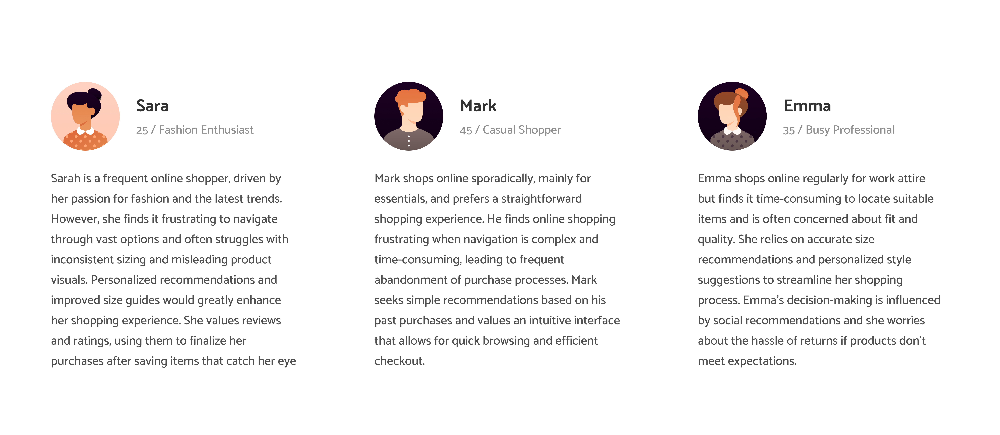

Cornell Eastern Music Ensemble
The Cornell Eastern Music Ensemble (CEME) website aims to promote a wider awareness and deeper appreciation of Asian culture, providing a comprehensive resource for music lovers interested in exploring the vibrant musical heritage of East Asia at Cornell.
Summary
Our student-run ensemble, inspired by the traditional Chinese orchestra, showcases the beauty of Chinese instruments and embraces a wide range of East Asian musical genres, including contemporary and fusion styles. Our website offers insights into our performances, outreach programs, and the cultural heritage we aim to promote on campus.
Prototype Preview

The Problem
The Cornell Eastern Music Ensemble (CEME) lost access to their original website due to missed payments to the hosting service and an incomplete website template on Campus Groups. Their content is currently scattered across Instagram, which isn't ideal for presenting all the information they want to share. They need a new, static website that effectively communicates their mission, highlights members, showcases performances and events, and provides clear recruitment information. Without a dedicated site, it's hard for them to engage with their audience and promote their activities.
Client Goals
The client mainly wants to promote Eastern instruments and music through the website. They feel this aspect is not well-known among individuals, and their main goal is to spread information about the club’s cultural and musical identity. They want people to learn more about the club, be motivated to attend their concerts, and have access to more resources to explore their music repertoire.
The client hopes to:
- Provide detailed information on the club, its objectives, and its role within the campus community, ensuring visitors gain a comprehensive understanding of how the club contributes to and interacts with the larger academic and social environment.
- Highlight the rich heritage of Eastern culture and its musical traditions, offering resources, articles, and multimedia content that delve into various aspects of Eastern music. Present the club's activities, such as performances and events.
- Cultivate a deeper connection between the audience and Eastern culture through the medium of music, aiming to inspire appreciation, respect, and a genuine interest in learning more about the cultural nuances and artistic expressions from the Eastern world.
User Interviews
To understand user needs for music-related websites and platforms, we interviewed four individuals with diverse musical interests and experiences. Here are the recurring pain points and shared observations:
Here are the main three pain points that users had:
- Complex Navigation: Confusing website layouts and navigation structures frustrate users, making it challenging to find relevant information quickly.
- Visual Engagement: Users prefer music websites that utilize multimedia content effectively to showcase performances and cultural activities, enhancing their understanding and interest in the organization.
- Content Timeliness: Timely updates and comprehensive information about events and activities are essential for users making decisions about attending concerts or joining the organization.
Audience and Audience Goals
Based on insights gathered from user interviews, we concluded that the goals of the audience are to:
- Learn about the Eastern music and culture
- Learn about the club's musical style, performances, and cultural contributions.
- Find details on auditions, requirements, and upcoming events.
- Engage with like-minded individuals and participate in club activities.
The primary audience for the Cornell Eastern Music Ensemble (CEME) website includes individuals interested in joining CEME, people passionate about Eastern and Asian cultural music, individuals searching for cultural clubs at Cornell Universit.
Information Architecture
We began by separating each content type (such as mission statement, team photos, instrument details) onto separate post-it notes and conducted card sorting to organize them effectively.

- In the first iteration, we focused on a clear homepage featuring the mission statement, team photos, cultural history, and a separate section for the Executive Board (Eboard). We also designated pages for instruments, Eboard members, events, and audition processes.
- The second iteration refined the homepage by integrating instrument images and details alongside the mission statement and team photos. Eboard members were highlighted separately, maintaining clarity.
- By the third iteration, we consolidated the mission statement, team photos, cultural history, and Eboard into the homepage. Instruments were detailed with images and musician lists, emphasizing cultural significance. Events and audition processes remained separate for accessibility.
In the end, we chose the third iteration for its cohesive flow, focusing on cultural and musical content without overcrowding. The navigation—Home, Instruments, Our Events, and Join Us!—was logically structured to cater to our audience's interest in learning about the ensemble, its cultural context, and participation opportunities
Visual Theme Brainstorming
We explored several themes for styling the website, ultimately selecting the Modern Chinese Culture theme.

- Colors: Minimalistic palette of black, white, lighter tones like beige, with one bright accent color.
- Shapes: Simple square/rectangle shapes with sharp borders for a clean and relaxed style.
- Imagery: Featuring Chinese calligraphy, symbols, and watercolor-style images in the background.
- Typography: Watercolor calligraphy fonts for headers and simpler, minimalistic fonts for longer text.
This theme was chosen because it effectively reflects the cultural essence of the club, providing a calm and focused environment where users can easily engage with the content without distractions. It offers a clear representation of the club's style and atmosphere at first glance.
Layout Exploration Brainstorm
Here are the sketches exploring different layouts for the CEME website:
Wide Layout Ideation
- Iteration 1: Navigation bar aligned right, logo on the left for clear organization. Carousel under the title, main content with events, and Upcoming Events in a flexbox below. Footer includes contact information.
- Iteration 2: Similar to Layout One but includes a flexbox for event categories. Alternates images with specific event details for visual appeal.

Narrow Layout Ideation
- Iteration 1: Logo on the left, hamburger menu on the right, carousel of event images followed by event listings and a sidebar for Upcoming Events. Footer displays contact information, optimized for smaller screens.
- Iteration 2: Similar to Layout One but organizes Upcoming Events into three categories with images for each event. Provides clear navigation and category-based event display for mobile users.


These layouts are consistent across other pages, ensuring a user-friendly experience throughout the CEME website.
Final Low Fidelity Design
We finalized and created our final low-fidelity designs that best addressed the identified pain points.


First Website Design Iteration + User Testing
This is our first design, so we wanted to implement user testing to see if our features were easy to use.

- You are interested in looking to join the CEME ensemble, but you don't know the process/how, find a way to apply.
- You are interested in learning more about the string instruments after attending a chinese orchestra concert. You observed an instrument that resembled a guitar. Find more information about this instrument, how it is played and who in CEME plays it.
- You are a music lover and you want to explore eastern music. Find information about when and where the nearest CEME performance is.
- You are still curious about learning more about CEME, and you want to directly contact CEME. Find their contact information.
After user testing with 4 users, we adjusted the color scheme for better visibility, adding hover effects to accordion elements for clearer interactivity cues, and ensuring accessibility by providing options for users who prefer minimal animations.
New High Fidelity Design
This is the new high fidelity design with the same 4 screens shown in the Low-Fis.


Prototype
This is the final prototyping stage of high fidelity design with key features.
Conclusion
eleVate is designed to revolutionize the online fashion shopping experience by providing personalized recommendations based on user-defined tags, budgets, and style preferences.
People are less likely to enjoy their shopping experience if it feels like a chore to find items that match their style. By offering tailored recommendations and easy navigation through features like tagging and favoriting, users can effortlessly discover fashion items that suit their preferences, feel less discouraged during the search process, and ultimately enjoy a more engaging shopping experience.
I designed and built eleVate from the ground up, culminating in a high-fidelity prototype that addresses key pain points in the online fashion shopping journey. Through designing and building eleVate, I have learned to think from the perspective of a designer—not only through brainstorming, interviewing, designing, and prototyping but also by recognizing mistakes, asking for feedback, and, most importantly, understanding people's needs. I discovered that I want to be a designer who creates not just aesthetically pleasing and usable products but also genuinely meaningful experiences that alleviate users' pain points and enhance their lives.